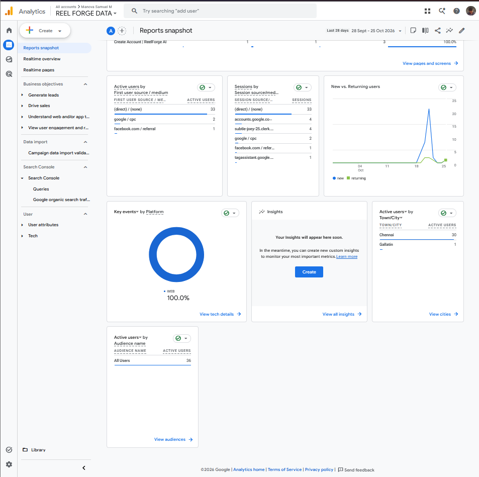
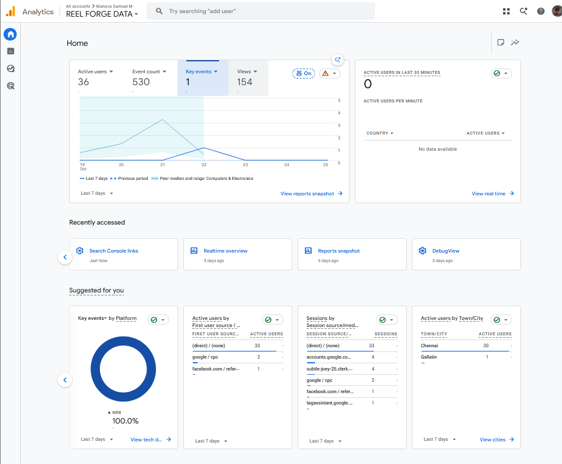
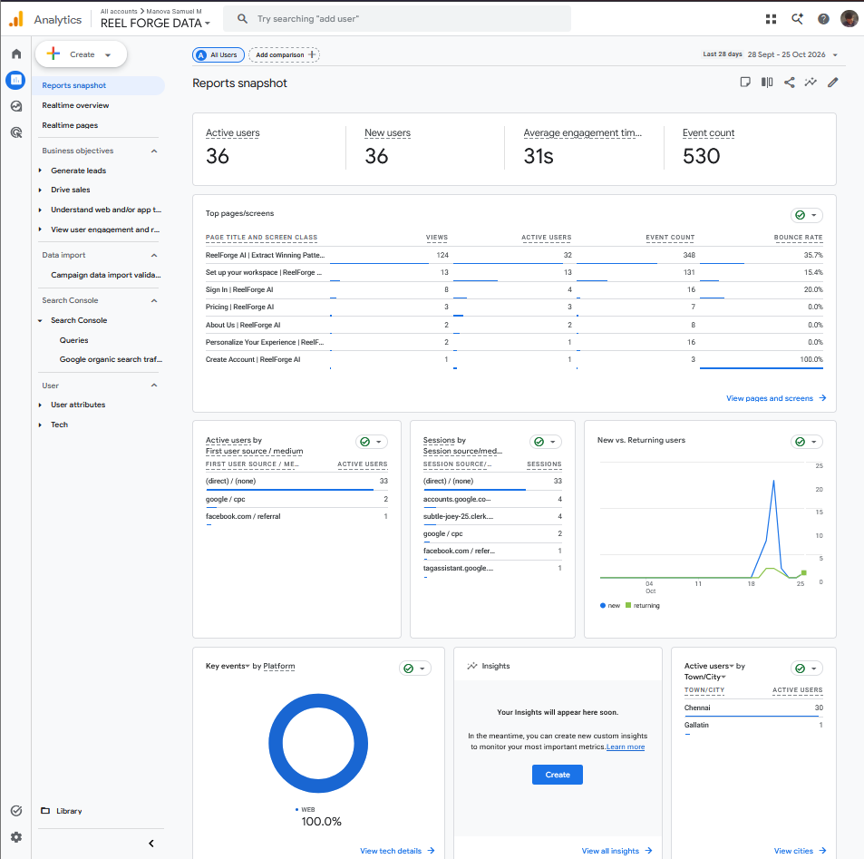
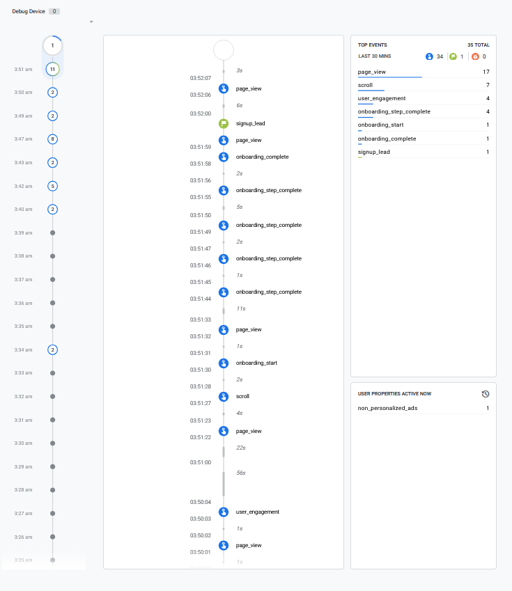
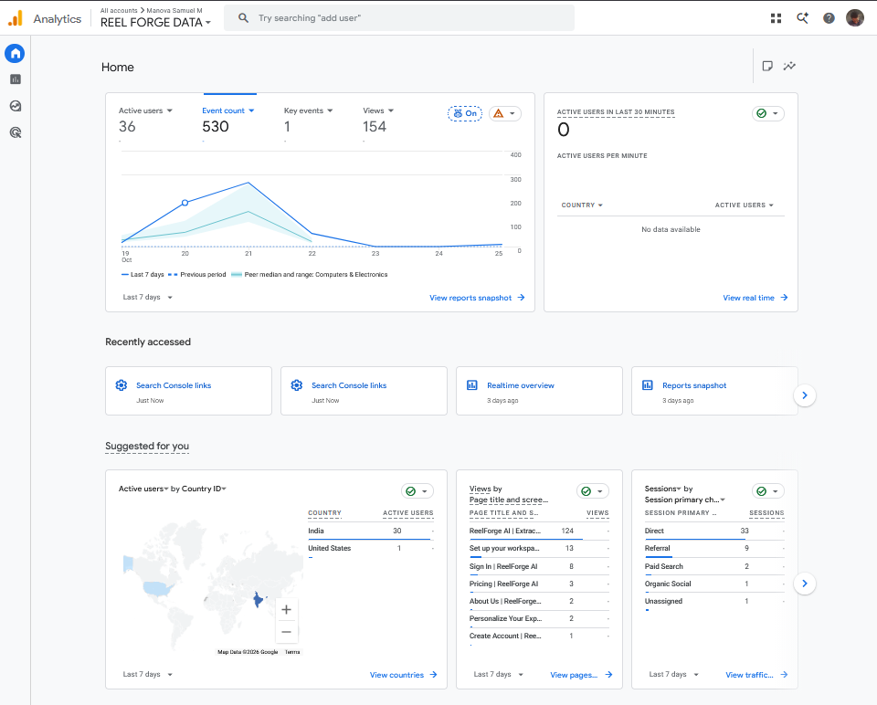

From click to conversion.
Measured in code.
A practical Google Analytics 4 and GTM case study for ReelForge AI — examining real website traffic acquisition, onboarding event taxonomy, DebugView verification, and signup conversion tracking integrity.

Real website activity,
transparently evaluated.
ReelForge AI is my own SaaS product project (hosted on Vercel), used here as a practical testing ground for implementing Google Analytics 4 via Google Tag Manager. The case study distinguishes observed analytics data from previous implementation QA and sets out clear verification boundaries.
- Which pages and events are receiving user activity?
- How are users being attributed to acquisition channels and sources?
- Are onboarding progression events available for funnel analysis?
- Does
signup_leadfire only after a genuine successful account creation?
signup_lead trigger and successful-signup semantics remain pending verification. No advertising results, commercial revenue, or performance lift are claimed.
Architecture & documented
event taxonomy.
Configured GA4 tags, custom parameters, and GTM trigger logic deployed to ReelForge AI on Vercel. Below is the complete event inventory recorded in GA4 during the reporting window.
| Component | Recorded Configuration Detail | Evidence & Implementation Note |
|---|---|---|
| Target Website | ReelForge AI on Vercel (Next.js Application) | Production environment (reel-forge-ai-psi.vercel.app ↗) |
| GA4 Measurement ID | G-03MQ1003FP |
Recorded in container config; active data stream |
| GTM Container ID | GTM-M3M6PCQV |
Client-side tag container managing triggers and parameters |
| Google Ads Tag | AW-18396355739 |
Recorded in earlier setup notes; configuration staged for Search campaigns |
| Validation Tools | GA4 Reports, DebugView, Chrome DevTools, Playwright | Multi-tool testing protocol validating client-to-server payload delivery |
| Event Name in GA4 | Observed Count | Interpretation & Tracking Context |
|---|---|---|
| page_view | 154 | Enhanced measurement and custom page view triggers across product routes |
| scroll | 108 | Scroll depth threshold triggers capturing engagement down the landing page |
| onboarding_step_complete | 77 | Granular step completions inside the interactive user onboarding workflow |
| user_engagement | 65 | GA4 automatic session engagement signals (>10s duration) |
| session_start | 45 | Distinct user session initializations across all traffic sources |
| first_visit | 36 | New unique user discoveries recorded on their initial browser session |
| onboarding_complete | 21 | Full onboarding flow completions; previously verified with Playwright QA |
| onboarding_start | 19 | User progression entering the first screen of the workspace setup |
| form_start | 2 | Initial user focus or input into interactive input elements |
| onboarding_skip | 2 | Users opting to bypass the guided questions to enter the app directly |
| signup_lead | 1 | Signup-related event; requires trigger & successful account validation |

Traffic acquisition &
page-view distribution.
Examining the first-user source/medium breakdown and page-level impressions. Because this is a compact dataset (36 users), numbers reflect observed baseline behavior rather than statistical channel effectiveness.
Acquisition: First-User Source / Medium
| First-User Source / Medium | Active Users | Share (%) |
|---|---|---|
| (direct) / (none) | 33 | 91.7% |
| google / cpc | 2 | 5.6% |
| facebook.com / referral | 1 | 2.8% |
Interpretation: Direct acquisition represents the vast majority in this early sample. Direct traffic should not automatically be assumed to be typed URLs (can include bookmarks, untagged links, or apps). Channel comparison requires larger data samples and verified UTM tagging.
Page Views: Top Reported Routes
| Page Title as Displayed | Views |
|---|---|
| ReelForge AI | AI Extract Winning Patterns… | 124 |
| Set up your workspace | 13 |
| Sign In | ReelForge AI | 8 |
| Pricing | ReelForge AI | 3 |
| About Us | ReelForge AI | 2 |
| Personalize Your Experience… | 2 |
| Create Account | ReelForge AI | 1 |
Interpretation: 80.5% of page views occurred on the main homepage. Page views reflect impression volume, not unique prospects or product adoption. The next phase must evaluate step progression into onboarding and verified account creation.

Verified findings vs.
pending verification.
The Events report records signup_lead once (from one user), and the DebugView timeline shows signup_lead received during a live testing session. Below is an honest breakdown of what the evidence proves versus what remains unverified.
Total Activity Captured
GA4 received 530 total events and 154 page views for the 28 Sep – 25 Oct 2026 reporting period, confirming that the measurement container is actively transmitting data.
signup_lead Appearance
signup_lead appears once in the Events report and in the DebugView timeline, proving that the tag successfully communicated with GA4 during that test session.
onboarding_complete Pipeline
Prior automated testing validated that onboarding_complete sent payloads with completed_all=true and question_id=experience_level, including a successful duplicate-suppression test.
Account Creation Semantics
Whether the GTM trigger fires strictly on HTTP 200 account confirmation (rather than a raw button click or invalid form submission) has not been independently verified.

signup_lead recorded once during the reporting window.

signup_lead alongside page_view and session events.
Rigorous 5-step validation
procedure for production.
Before marking signup_lead as a key event in GA4 or importing it into Google Ads as a primary conversion action, the following disciplined QA protocol should be executed.
Inspect GTM Container
Audit existing tag, destination, and trigger variables in GTM without changing live production configuration.
Negative Path Testing
Attempt invalid/failed signups (duplicate email, wrong password). Confirm signup_lead does NOT fire.
Positive Path Testing
Execute a successful test registration and independently verify account creation in the database/auth provider.
DebugView Verification
Validate in GA4 DebugView that the event fires exactly once per completed registration with expected parameters.
Reconcile & Promote
Reconcile analytics counts against backend CRM records, then decide whether to promote to a GA4 Key Event.
| Current Observation | Actionable Technical Recommendation | Implementation Priority |
|---|---|---|
| Onboarding events exist (19 start, 21 complete) | Build a funnel exploration in GA4 with consistent step definitions; examine dropout rates without assuming counts equal unique users. | High Priority |
| Signup-related event observed (1 count) | Validate GTM trigger against verified account creation callback before adopting as a conversion KPI. | Critical QA |
| Small acquisition sample (36 users) | Standardize UTM tracking parameters, check Google Ads auto-tagging (GCLID), and collect larger sample before comparing channels. | Standard Practice |
| Page views concentrated on main page (124 views) | Measure progression from landing page CTA clicks to interactive product actions, workspace setup, and account creation. | High Priority |
| Multiple tags recorded (GA4, GTM, Google Ads) | Audit container configurations to ensure zero duplicate page_view fires or unconsented tracking tags. | Ongoing Maintenance |
Key learnings &
professional takeaways.
An analytics event is only useful as a business KPI when its definition matches the underlying action and its implementation is verified in code. Responsible analytics reporting must clearly separate observed counts, tested implementation behavior, and strategic recommendations.
"Implemented and analysed GA4 tracking for a personal SaaS website; reviewed acquisition, page-view and onboarding event reports, documented DebugView evidence, and developed a validation plan for signup conversion tracking."